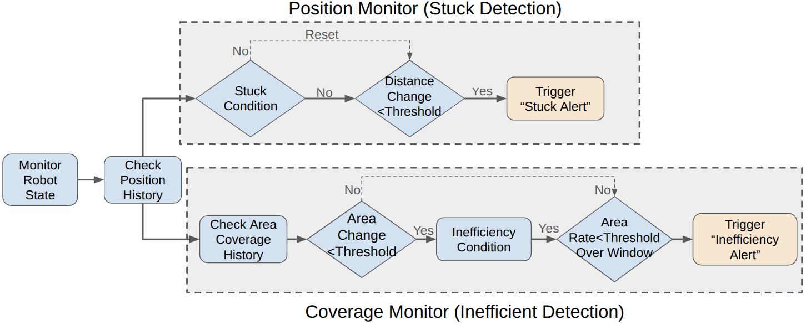
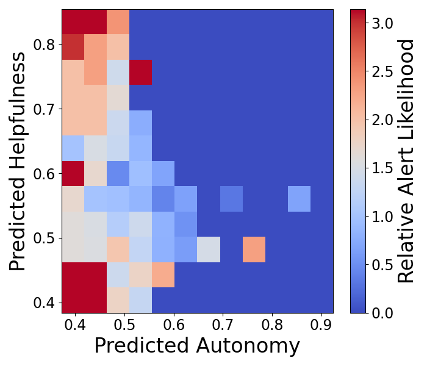
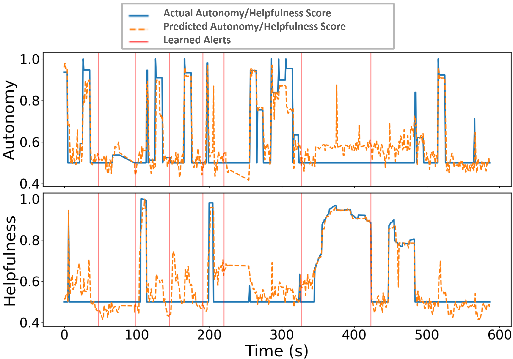

Learning When a Robot Should Ask for Help:
Adaptive Intervention Requests in Human–Robot Teaming
Under Review
Abstract
Robots operating in complex environments occasionally encounter situations where autonomous navigation fails. Timely human intervention can prevent or resolve these failures, but requesting help too frequently increases operator workload and reduces team efficiency. We propose an adaptive alert policy trained with offline reinforcement learning from past intervention outcomes and autonomous progress. The policy learns to request help selectively when an intervention is likely to be beneficial. We compare the learned policy with threshold-based, score-based, and LinUCB baselines in simulation, followed by evaluation against threshold-based and no-alert conditions in a physical user study. Results show improved exploration efficiency, fewer unnecessary alerts, and reduced operator workload without a significant change in trust.
Video
Method
Help-Seeking Formulation
The learned action addresses when to ask for help. At each decision step, at ∈ {0,1}: at = 0 continues autonomous navigation and at = 1 issues an assistance request. The human waypoint ut is an external response, not an action selected by the policy. Once a waypoint is provided, path planning and execution remain autonomous. The interaction order is st → ot → at → ut → st+1.
Policy Architecture
The policy encodes a 100-step observation history to address partial observability. A two-layer MLP and GRU encode scalar robot and interaction observations, while a residual CNN encodes the local costmap. Their fused representation supports three parallel heads. The auxiliary predictions shape the shared representation during training; they are not fed into the Q-value head as decision inputs.
| Component | Configuration |
|---|---|
| Scalar/temporal encoder | Two-layer MLP; GRU with 256 hidden units; 100-step history |
| Costmap encoder | Residual CNN; 23 × 23 × 3 input; 256-D spatial embedding |
| Shared representation | Concatenated temporal and spatial features, zt ∈ R512 |
| Q-value head | FC 512 → 128 + ReLU; linear 128 → 2 action values |
| Autonomous-progress head | FC 512 → 128 + ReLU; sigmoid scalar output |
| Intervention-outcome head | FC 512 → 128 + ReLU; sigmoid scalar output |
Auxiliary Prediction Objectives
The autonomy head estimates whether the robot can make progress without assistance. The intervention-outcome head estimates whether the waypoint intervention observed in the logged trajectory was followed by favorable exploration progress. Both targets are constructed retrospectively and trained with mean-squared-error losses. The intervention-outcome target reflects the outcome following the intervention actually received; it does not estimate its counterfactual benefit over autonomous continuation.
Training Details
| Setting | Value |
|---|---|
| Policy objective | Mean-squared n-step TD loss with Conservative Q-Learning |
| Auxiliary losses | Mean-squared error (L2) |
| Loss weights | λaux = 0.5; λCQL = 1.0 |
| Optimizer | Adam; learning rate 1 × 10−4; batch size 64 |
| Stabilization | Maximum gradient norm 1.0; hard target-network update every 10 epochs |
| Training data | 134 episodes; more than 99,000 sequences; sequence length 100 |
Expertise-Conditioned Intervention Model
Intervention data from 27 prior-study participants were divided into novice- and expert-derived groups; intermediate operators were assigned using their prior task performance rather than discarded. A separate gradient-boosted multi-output regressor was trained for each group using 100 estimators, learning rate 0.05, maximum depth 3, and squared-error loss. Each rollout samples a waypoint-distance parameter from the corresponding empirical group distribution and retains it throughout the rollout, providing a limited persistent behavioral characteristic. These rollouts are controlled stochastic instances—not additional independent human participants or a model of the full diversity of human behavior.
Baseline Policies
The three baselines represent rule-based, supervised prediction-based, and contextual decision-making alternatives. They are evaluated with the same maps, simulated-user conditions, action space, and intervention protocol as the proposed policy.
Threshold-based alert policy
This policy monitors robot motion and exploration coverage. A stuck alert is issued when displacement remains below 0.04 m for more than 12 s. An inefficiency alert is issued when explored area does not increase during a 10 s window, corresponding to an average exploration rate of 0 m²/s over that window. The thresholds were selected by grid search on validation episodes disjoint from the evaluation maps. Every alert uses the same generic request for waypoint assistance.
Direct score-based policy
This baseline uses the two supervised auxiliary predictions without the sequential RL Q-value head. It requests assistance when predicted autonomous progress is low and the predicted intervention outcome is favorable:
Held-out validation selected τA = τH = 0.2. The comparison tests whether the auxiliary predictions and a fixed rule are sufficient, or whether optimizing sequential return provides additional benefit.
LinUCB contextual-bandit policy
LinUCB is trained from the same offline episodes, logged actions, action-associated reward, and observable information as the proposed policy. Its context xt contains velocity, pose change, exploration progress and rate, time since the previous alert, interaction variables, and recent temporal statistics. Future intervention outcomes and other privileged information are excluded.
For each action a ∈ {0,1}, the offline samples define Aa = λI + Σi:aᵢ=axixiT and ba = Σi:aᵢ=arixi, giving θa = Aa−1ba. The immediate-reward estimate is
During evaluation, LinUCB adds an uncertainty bonus:
and selects at = arg maxa∈{0,1} Ut(a). The validation search used α ∈ {0.1, 0.25, 0.5, 1.0, 2.0} and λ ∈ {0.01, 0.1, 1.0, 10.0}; selected values were α = 0.5 and λ = 1.0. The learned parameters remain fixed during closed-loop evaluation, with no online updates. When LinUCB selects the alert action, the same expertise-conditioned simulated-user model supplies a waypoint.

Experiment Setup
Simulation Evaluation
Training uses 134 semi-autonomous navigation episodes. Evaluation is conducted in held-out environments under 50 novice-derived and 50 expert-derived simulated interaction rollouts. All policies use the same environments, intervention models, mission protocol, and observable information. The rollouts provide controlled expertise-conditioned variation and should not be interpreted as 100 independent people.
Physical User Study
Twenty participants completed three randomized ten-minute exploration trials: no alert, threshold alert, and learned adaptive alert. Participants supervised a Boston Dynamics Spot while concurrently performing an object-verification task. When assistance was requested, the participant supplied a high-level waypoint; navigation to that waypoint remained autonomous. Age and gender were not collected. The pre-study questionnaire recorded prior robot-supervision and navigation-game experience using four frequency levels.
Physical Environment and Autonomy Challenges
Before the study, intervention-free autonomous runs were used to identify 12 recurrent failure-prone locations. The same map, barrier layout, autonomy stack, mission duration, and underlying failure landscape were used for every participant and condition. Individual trials were not expected to encounter identical events because a waypoint changes the subsequent trajectory.
The physical environment was not designed to geometrically reproduce the simulation environments. Instead, it contained analogous autonomy-degradation situations identified through intervention-free autonomous runs.
Failure landscape
| Event type | Operational description | Physical example | Why a waypoint helps | Locations |
|---|---|---|---|---|
| Physical immobilization | Robot becomes physically stuck or cannot continue autonomous motion. | A low branch blocks a passage between fabric barriers. | Redirects the robot away from the blocked route. | 2 |
| Planner/navigation deadlock | Repeated replanning fails to make effective progress toward the active goal. | Fabric barriers form a dead-end pocket. | Changes the navigation objective to a location outside the pocket. | 3 |
| Goal/frontier oscillation | Robot repeatedly switches targets without meaningful exploration progress. | Barrier geometry creates competing exploration routes. | Breaks the repeated goal-selection cycle. | 4 |
| Low-progress region | Robot remains mobile but explored-area growth stays below the progress criterion. | Robot re-traverses a previously explored region. | Redirects exploration toward a region with greater coverage potential. | 3 |
Relation to Simulation
| Simulation feature | Physical analogue |
|---|---|
| Narrow tunnels | Constrained passages formed by barriers |
| Dead ends | Barrier-created dead-end or enclosed regions |
| Obstacles | Physical and barrier-induced obstructions |
| Intersections | Competing navigation routes and exploration frontiers |
| Slopes/terrain | Uneven terrain and elevation transitions |
| Navigation/planning difficulty | Deadlock, repeated replanning, and goal/frontier oscillation |
Autonomy stack
The help-seeking policy operates above the deployed SubT autonomy stack, comprising 3D LiDAR SLAM, global exploration planning, and search-based local navigation with obstacle avoidance and replanning. It does not replace these modules. Waypoint assistance is used when autonomous exploration remains ineffective despite these capabilities, such as during physical immobilization, repeated replanning/deadlock, goal/frontier oscillation, or sustained low progress. Representative clips appear with the results below.
Results
Simulation Policy Comparison
The proposed sequential policy is compared with the fixed threshold, direct score-based, and LinUCB contextual-bandit policies under identical expert- and novice-derived evaluation conditions.
| User | Policy | Area (m²) | Recovery (s) | Progress / alert | Post-alert progress (m²) |
|---|---|---|---|---|---|
| Expert | Threshold | 199.0 ± 21.0 | 70.5 ± 19.3 | 8.3 ± 2.2 | 7.1 ± 2.4 |
| Score-based | 218.6 ± 12.7 | 43.8 ± 13.5 | 14.6 ± 2.4 | 9.4 ± 2.2 | |
| LinUCB | 224.3 ± 10.9 | 38.7 ± 11.2 | 16.8 ± 2.1 | 9.9 ± 2.1 | |
| Proposed | 232.0 ± 4.5 | 29.1 ± 10.4 | 21.1 ± 2.5 | 15.0 ± 4.1 | |
| Novice | Threshold | 189.7 ± 37.3 | 100.6 ± 27.9 | 4.7 ± 1.9 | 5.3 ± 2.2 |
| Score-based | 205.4 ± 14.8 | 63.5 ± 16.2 | 10.8 ± 1.7 | 6.9 ± 2.1 | |
| LinUCB | 205.8 ± 13.1 | 56.7 ± 11.9 | 13.2 ± 1.5 | 8.0 ± 2.0 | |
| Proposed | 217.0 ± 10.4 | 41.2 ± 3.2 | 16.7 ± 0.1 | 12.0 ± 2.5 |
Statistical comparisons with baseline policies
| User | Comparison | Metric | Δ [95% CI] | p | Cohen’s d |
|---|---|---|---|---|---|
| Expert | Proposed vs. threshold | Area | 33.0 [26.9, 39.1] | < .001 | 2.17 |
| Recovery | −41.4 [−47.6, −35.2] | < .001 | −2.67 | ||
| Prog./Alert | 12.8 [11.9, 13.7] | < .001 | 5.44 | ||
| Post-alert Prog. | 7.9 [6.6, 9.2] | < .001 | 2.35 | ||
| Proposed vs. score | Area | 13.4 [9.6, 17.2] | < .001 | 1.41 | |
| Recovery | −14.7 [−19.5, −9.9] | < .001 | −1.22 | ||
| Prog./Alert | 6.5 [5.5, 7.5] | < .001 | 2.65 | ||
| Post-alert Prog. | 5.6 [4.3, 6.9] | < .001 | 1.70 | ||
| Proposed vs. LinUCB | Area | 7.7 [4.4, 11.0] | < .001 | 0.92 | |
| Recovery | −9.6 [−13.9, −5.3] | < .001 | −0.89 | ||
| Prog./Alert | 4.3 [3.4, 5.2] | < .001 | 1.86 | ||
| Post-alert Prog. | 5.1 [3.8, 6.4] | < .001 | 1.57 | ||
| Novice | Proposed vs. threshold | Area | 27.3 [16.3, 38.3] | < .001 | 1.00 |
| Recovery | −59.4 [−67.4, −51.4] | < .001 | −2.99 | ||
| Prog./Alert | 12.0 [11.5, 12.5] | < .001 | 8.92 | ||
| Post-alert Prog. | 6.7 [5.8, 7.6] | < .001 | 2.85 | ||
| Proposed vs. score | Area | 11.6 [6.5, 16.7] | < .001 | 0.91 | |
| Recovery | −22.3 [−27.0, −17.6] | < .001 | −1.91 | ||
| Prog./Alert | 5.9 [5.4, 6.4] | < .001 | 4.90 | ||
| Post-alert Prog. | 5.1 [4.2, 6.0] | < .001 | 2.21 | ||
| Proposed vs. LinUCB | Area | 11.2 [6.5, 15.9] | < .001 | 0.95 | |
| Recovery | −15.5 [−19.0, −12.0] | < .001 | −1.78 | ||
| Prog./Alert | 3.5 [3.1, 3.9] | < .001 | 3.29 | ||
| Post-alert Prog. | 4.0 [3.1, 4.9] | < .001 | 1.77 |
Differences are proposed minus baseline. Welch’s two-sample t-tests; 95% confidence intervals and Cohen’s d effect sizes.
Compared with the score-based policy, explored area increased by 13.4 m² for experts (95% CI [9.6, 17.2], p < .001, d = 1.41) and 11.6 m² for novices (95% CI [6.5, 16.7], p < .001, d = 0.91). Compared with LinUCB, it increased by 7.7 m² for experts (95% CI [4.4, 11.0], p < .001, d = 0.92) and 11.2 m² for novices (95% CI [6.5, 15.9], p < .001, d = 0.95).
Auxiliary-Objective Ablation
All variants use the same observation representation, offline RL/CQL formulation, training data, reward, and evaluation protocol; only auxiliary supervision changes.
| User | Method | Area (m²) | Recovery (s) | Progress / alert | Post-alert progress (m²) |
|---|---|---|---|---|---|
| Expert | RL only | 220.2 ± 12.9 | 40.4 ± 11.8 | 17.4 ± 1.5 | 10.5 ± 2.1 |
| RL + autonomy | 224.5 ± 10.7 | 37.1 ± 10.2 | 18.1 ± 2.1 | 11.2 ± 3.3 | |
| RL + intervention outcome | 226.7 ± 8.9 | 35.2 ± 9.1 | 18.8 ± 1.2 | 12.0 ± 5.1 | |
| Full model | 232.0 ± 4.5 | 29.1 ± 10.4 | 21.1 ± 2.5 | 15.0 ± 4.1 | |
| Novice | RL only | 198.6 ± 15.8 | 45.7 ± 10.4 | 14.8 ± 1.6 | 6.7 ± 2.5 |
| RL + autonomy | 215.9 ± 13.6 | 42.5 ± 5.7 | 15.5 ± 0.8 | 8.1 ± 2.4 | |
| RL + intervention outcome | 203.8 ± 12.1 | 43.9 ± 6.8 | 15.2 ± 1.1 | 9.5 ± 3.3 | |
| Full model | 217.0 ± 10.4 | 41.2 ± 3.2 | 16.7 ± 0.1 | 12.0 ± 2.5 |
Full ablation statistical comparisons
| User | Comparison | Metric | Δ [95% CI] | p | Cohen’s d |
|---|---|---|---|---|---|
| Expert | Full vs. RL only | Area (m²) | 11.8 [7.9, 15.7] | < .001 | 1.22 |
| Recovery (s) | −11.3 [−15.7, −6.9] | < .001 | −1.02 | ||
| Prog./Alert | 3.7 [2.9, 4.5] | < .001 | 1.79 | ||
| Post-alert Prog. (m²) | 4.5 [3.2, 5.8] | < .001 | 1.38 | ||
| Full vs. RL+A | Area (m²) | 7.5 [4.2, 10.8] | < .001 | 0.91 | |
| Recovery (s) | −8.0 [−12.1, −3.9] | < .001 | −0.78 | ||
| Prog./Alert | 3.0 [2.1, 3.9] | < .001 | 1.30 | ||
| Post-alert Prog. (m²) | 3.8 [2.3, 5.3] | < .001 | 1.02 | ||
| Full vs. RL+H | Area (m²) | 5.3 [2.5, 8.1] | < .001 | 0.75 | |
| Recovery (s) | −6.1 [−10.0, −2.2] | .002 | −0.62 | ||
| Prog./Alert | 2.3 [1.5, 3.1] | < .001 | 1.17 | ||
| Post-alert Prog. (m²) | 3.0 [1.2, 4.8] | .002 | 0.65 | ||
| Novice | Full vs. RL only | Area (m²) | 18.4 [13.1, 23.7] | < .001 | 1.38 |
| Recovery (s) | −4.5 [−7.6, −1.4] | .005 | −0.58 | ||
| Prog./Alert | 1.9 [1.4, 2.4] | < .001 | 1.68 | ||
| Post-alert Prog. (m²) | 5.3 [4.3, 6.3] | < .001 | 2.12 | ||
| Full vs. RL+A | Area (m²) | 1.1 [−3.7, 5.9] | .651 | 0.09 | |
| Recovery (s) | −1.3 [−3.1, 0.5] | .164 | −0.28 | ||
| Prog./Alert | 1.2 [1.0, 1.4] | < .001 | 2.10 | ||
| Post-alert Prog. (m²) | 3.9 [2.9, 4.9] | < .001 | 1.59 | ||
| Full vs. RL+H | Area (m²) | 13.2 [8.7, 17.7] | < .001 | 1.17 | |
| Recovery (s) | −2.7 [−4.8, −0.6] | .013 | −0.51 | ||
| Prog./Alert | 1.5 [1.2, 1.8] | < .001 | 1.92 | ||
| Post-alert Prog. (m²) | 2.5 [1.3, 3.7] | < .001* | 0.85 |
Differences are full model minus comparison variant. Welch’s two-sample t-tests; 95% confidence intervals and Cohen’s d effect sizes.
The full model exceeded RL only in explored area by 11.8 m² for experts (95% CI [7.9, 15.7], p < .001, d = 1.22) and 18.4 m² for novices (95% CI [13.1, 23.7], p < .001, d = 1.38). The novice full-model and autonomy-only areas were comparable (difference 1.1 m², 95% CI [−3.7, 5.9], p = .651), while post-alert progress favored the full model.
Paired Intervention Validation
Because the intervention-outcome target captures observed post-intervention progress rather than the counterfactual benefit of intervention, we additionally evaluate whether intervention improves exploration relative to autonomous continuation.
We selected 40 alert events from RL-alert evaluation runs: 20 novice-derived and 20 expert-derived events. For each event, the simulator reran the corresponding initial configuration to reproduce the navigation trajectory up to the target alert. At that decision point, one branch applied the recorded waypoint intervention and the other withheld the waypoint and continued with the existing autonomous navigation and replanning system. Both branches used the same 10 s post-decision horizon and were evaluated by newly explored area. For event t, Bt = ΔEt,10int − ΔEt,10auto.
| Pre-intervention event | n | Intervention ΔE | Autonomous ΔE | Benefit (m²) | Benefit > 0 |
|---|---|---|---|---|---|
| Stuck / no progress | 18 | 8.0 ± 4.7 | 0.1 ± 0.1 | 7.9 ± 4.6 | 18/18 |
| Low / inefficient progress | 22 | 10.4 ± 5.0 | 2.9 ± 1.7 | 7.5 ± 3.3 | 22/22 |
| Overall | 40 | 9.3 ± 5.0 | 1.6 ± 1.8 | 7.7 ± 3.9 | 40/40 |
Mean benefit was 7.7 m² (95% CI [6.5, 9.0]; paired t(39) = 12.48, p < .001, dz = 1.97), with positive benefit in all 40 matched events.
Because the asynchronous navigation stack does not permit exact restoration of every internal planner state and module timing, this is an approximate paired counterfactual under closely matched initial conditions, not an exact causal estimate.
Physical User Study
The adaptive policy increased explored area while issuing fewer alerts. It improved mission-level progress per alert and alert success rate and produced the lowest NASA-TLX workload. Recovery time improved descriptively but did not reach statistical significance; trust did not differ significantly.
| Metric | No alert | Threshold | Adaptive | p-value |
|---|---|---|---|---|
| Explored area (m²) | 569.38 ± 108.63 | 596.24 ± 125.60 | 678.33 ± 121.90 | < .001 |
| Number of alerts | — | 17.00 ± 6.30 | 10.70 ± 3.90 | .042 |
| Progress / alert (m²) | — | 49.81 ± 21.81 | 73.12 ± 35.19 | .016 |
| Recovery time (s) | — | 14.01 ± 11.90 | 11.02 ± 10.40 | .056 |
| Alert success rate | — | 0.47 ± 0.23 | 0.63 ± 0.19 | .048 |
| NASA-TLX | 51.54 ± 15.61 | 43.78 ± 14.21 | 39.45 ± 12.20 | < .001 |
| Trust | 3.35 ± 0.89 | 3.73 ± 0.98 | 3.48 ± 0.91 | .331 |
Mean ± SD. Friedman tests with Bonferroni-corrected post-hoc Wilcoxon signed-rank tests.


Examples of Physical Filure Cases
Representative clips illustrate physical immobilization, navigation deadlock, goal/frontier oscillation, and low-progress events observed in the physical environment.
Interpretation note: Camera evidence shows the physical environment and robot motion; planner-internal behavior should be interpreted together with synchronized navigation logs.
Limitations
- The intervention-outcome target reflects observed post-intervention outcomes rather than counterfactual intervention benefit; the latter is evaluated separately through paired validation.
- Simulation assumes immediate alert responses and provides only limited expertise-conditioned variation in human intervention behavior.
- The physical study involved 20 primarily novice participants in one exploration environment, and age and gender were not collected.
- The current policy addresses when to request waypoint assistance; extending it to different assistance modalities and jointly determining when and what assistance to request remains future work.
BibTeX
@article{anonymous2026learning,
title = {Learning When a Robot Should Ask for Help:
Adaptive Intervention Requests in Human--Robot Teaming},
author = {Anonymous},
year = {2026},
note = {Under review}
}